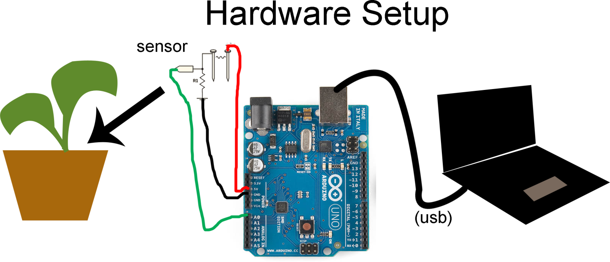

Soil Guru Tutorial
Goal
Measure soil humidity and plot in a graph on a webserver.
Setup
- A simple sensor made of wire and nails
- An Arduino Shield, on which the sensor is soldered
- An Arduino Uno hosting the shield
- A computer, linked via a USB cable to the Arduino Uno
- A Python script running on the computer, logging data from the Arduino setup, and generating a data visualization
Hardware
- Make the soil humidity sensor
Needed- 2 nails
- wire
- solder
- 10kOhm resistor
- tools to get the job done
Steps- Cut two pieces of wire, each 2’ long, and strip off the ends
- Wrap one end of each wire around the head of each nail
- Cover the wire-nail connection with a generous amount of solder